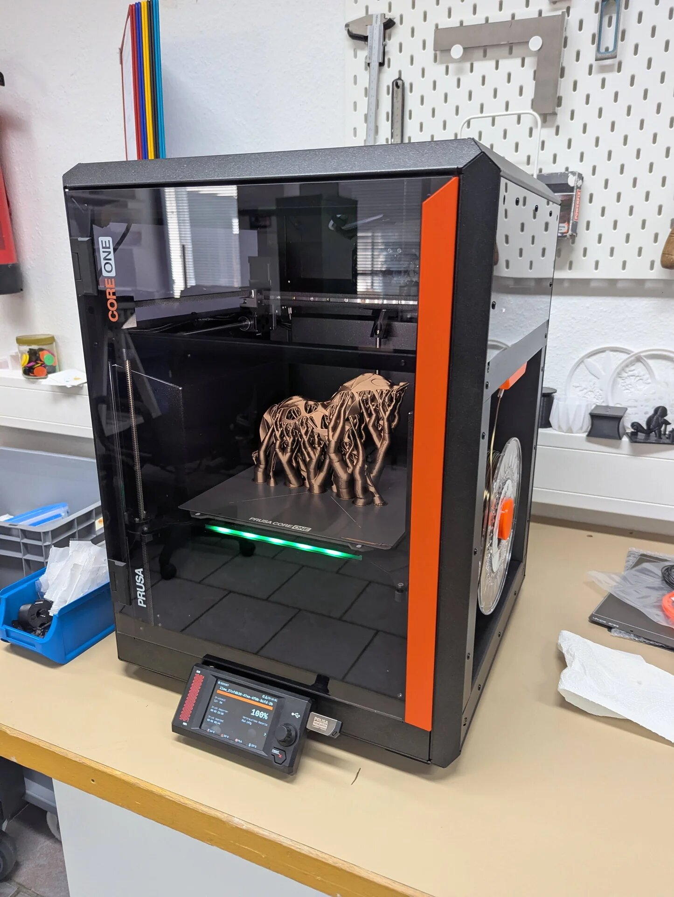

Offene Werkstatt
Einfach vorbeikommen, nach einer kurzen Einweisung selbst loslegen – oder gemeinsam mit anderen an Ideen tüfteln.
Termine auf unserer Webseite oder auf Anfrage
3D-Drucker
Laser-Gravierer
CNC-Fräse
KI-Workstation
Tischbohrmaschine
Holzwerkzeug
Co-Working-Platz
Elektrowerkzeuge

Repair Café
Reparieren statt wegwerfen: Ehrenamtliche helfen dabei, Defektes wieder flottzumachen – vom kaputten Teddy bis zum defekten Toaster.
Nächster Termin: Sa, 28.11.2026, 10–12:30 Uhr, Stadtbücherei Jülich
Gemeinnützig – und auf Spenden angewiesen
Wir finanzieren uns über Mitgliedsbeiträge und Spenden. Jeder Beitrag hilft – ebenso wie jede helfende Hand.
Miete für die Räume
Werkzeug und Maschinen
Veranstaltungen

Spenden und mehr